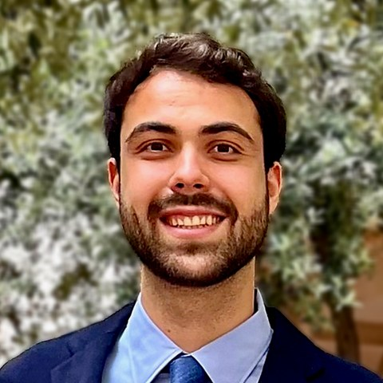

People
Principal investigator

Ioannis Mandralis
Assistant Professor in Robotics
Ioannis Mandralis is an incoming Assistant Professor in Robotics in the Machine Intelligence Group of the Division of Information Engineering at the University of Cambridge, starting in January 2027. He is currently a Postdoctoral Scholar at EPFL with Mirko Kovač, working on the design, dynamics and control of multimodal robots that move across air, ground and water. He received his Ph.D. in Aerospace Engineering from the California Institute of Technology, working with Morteza Gharib and Richard M. Murray in the Center for Autonomous Systems and Technologies on aerially transforming ground–aerial robots; his thesis defense received the Hans G. Hornung Prize. His doctoral research was supported by an Onassis Foundation Scholarship, and he received the Rolf D. Buhler Memorial Award for exemplary academic performance. He holds a B.Sc. in Mechanical Engineering from EPFL and an M.Sc. from ETH Zürich, awarded the Degree Distinction Prize, where his research centred on learning and computational methods in fluid dynamics and robotics.
PhD students
The first PhD students will join in October 2027. See Openings.
Master’s and project students
Enquiries from Master’s, Part IIB and MPhil students are welcome. See Openings.
Students I have advised
I have had the privilege of helping to mentor the following students.
- 2026–Junghwan RoPhD · EPFL
- 2026–Alexandros PantalosMaster’s thesis · EPFL
- 2026–Luca DofingStudent project · ETH ZurichAerial–aquatic transition control of a hybrid aerial–aquatic vehicle
- 2026Giacomo PiattelliStudent project · ETH ZurichAerial–aquatic transition control of a hybrid aerial–aquatic vehicle
- 2025Simon GmurVisiting from EPFLMaster’s thesis · Caltech
- 2024Vincent GheroldVisiting from EPFLMaster’s thesis · CaltechPrix BlueBotics for the best Master’s thesis in robotics at EPFL
- 2024Quentin DelfosseVisiting from EPFLMaster’s thesis · Caltech
- 2024Gabriel MargariaVisiting from EPFLMaster’s thesis · Caltech
- 2024Diego GarciaUndergraduate research · Caltech
- 2023Severin SchumacherVisiting from TU MunichMaster’s thesis · Caltech
- 2023Sofia WanUndergraduate research (SURF) · CaltechFinalist, best SURF project
- 2023Steven LeiUndergraduate research (SURF) · CaltechFinalist, best SURF project